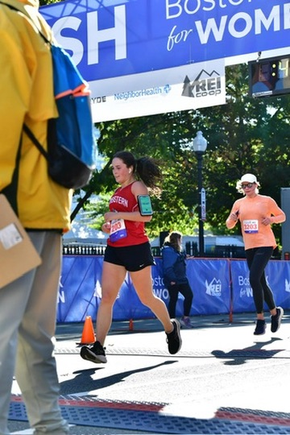
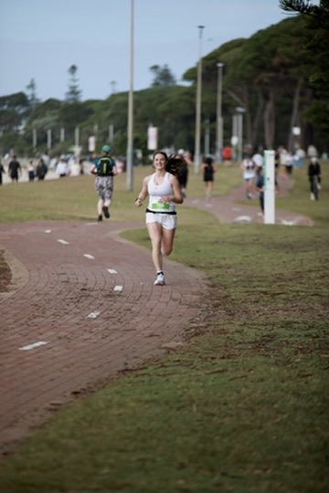
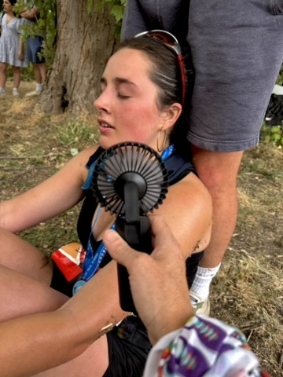
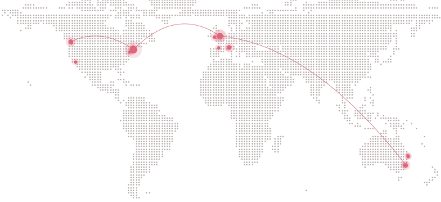

Sport & the art of persistence
Endurance.
More than fitness: a collection of races, distances, setbacks and the small decisions that make the miles add up.

Four minutes in two years.

The same race, two years apart. A very different runner at the finish line.
The Boston 10K for Women on 12 October 2024 was my first ever 10K race. I crossed the line in 47:38, and I remember thinking how far ten kilometres felt.
Two years later I came back for the race’s fiftieth running and finished in 43:24, more than four full minutes faster on the same course. That time came from two years of consistent training, building up through marathons, long runs and cycling, and learning how to pace myself instead of just running hard.
Taking four minutes off a 10K doesn’t happen in one race. It’s what showing up week after week looks like.
Eight weeks apart.
Two marathons on opposite sides of the world. Neither went the way I had planned.
In the summer of 2026 I ran two full marathons, in Sydney and then London, only eight weeks apart.
I ran the Bayside Run Marathon in Sydney on ruptured ligaments and shin splints. Every kilometre was a negotiation with my body, and finishing in 3:51 taught me more about patience and pacing than any training run had.
Eight weeks later I lined up for the Thames Meander Marathon in London in 98°F heat. With so little time to recover, the goal was simply to keep moving and get to the finish, and I crossed the line in 4:02.
Two marathons, two very different kinds of hard. Together they showed me that endurance is less about the perfect race and more about adapting to the one you are given.


The map
Every mile, mapped.
Check out a map I made of all the places I’ve run, cycled and hiked over the last two years.
Explore the full map- 142Runs
- 4Countries
- 2Years
- J
- F
- M
- A
- M
- J
- J
- A
- S
- O
- N
- D
- J
- F
- M
- A
- M
- J
- J
- A
- S
- O

The story continues
There is always further to go.
Running is more than fitness. It’s a way to push through something hard, past the boundaries I thought I had, and to find out they were never fixed. That lesson doesn’t stay on the road. It comes with me into my studies, my work and everything I build.
Marathons, long rides, early swims — and a half Ironman on the horizon. This is a record of the process, not just the finish lines.
← Back to Portfolio